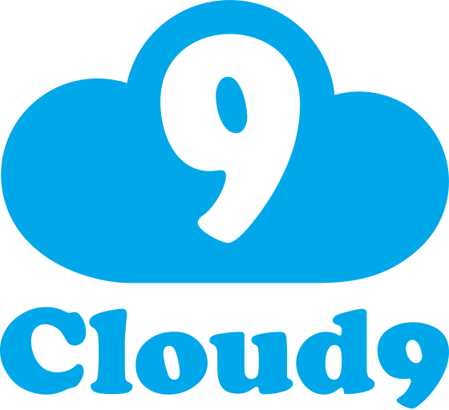
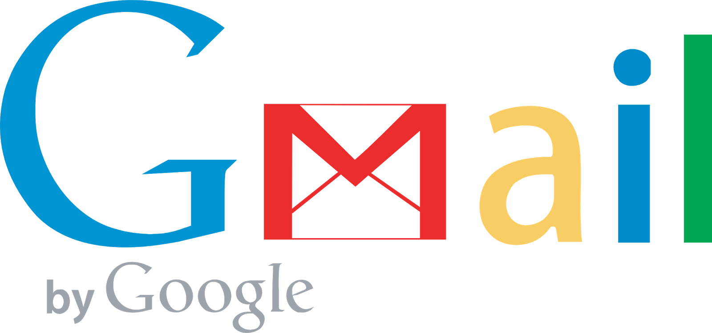

Raven Limited
Software as a service - Sales Force.
Software as a service (SaaS) is a software distribution model in which a third-party provider hosts applications and makes them available to customers over the Internet. SaaS removes the need for organizations to install and run applications on their own computers or in their own data centers. Rather than purchasing software to install, or additional hardware to support it, customers subscribe to a SaaS offering. Generally, they pay for this service on a monthly basis using a pay as you go model.

Platform as a service - Cloud 9.
Platform as a service (PaaS) is a cloud computing model in which a third-party provider delivers hardware and software tools, usually those needed for application development, to users over the internet. A PaaS provider builds and supplies a resilient and optimized environment on which users can install applications and data sets. Many PaaS products are focused towards the development of software and applications. They provide storage infrastructure, text editing, testing services more quickly and efficiently

Infrastrucure as a service - Amazon.
Infrastructure as a service (IaaS) is a form of cloud computing that provides virtualized computing resources over the internet. A cloud provider hosts the infrastructure components traditionally presented in an on-premises data center. The IaaS provider also supplies a range of services to accompany those infrastructure components. These can include detailed billing, monitoring, log access, security, load balancing and clustering as well as storage resiliency such as backup, replication and recovery.

Communcation as a service - Gmail.
Communications as a Service (CaaS) is an outsourced enterprise communications solution that can be leased from a single vendor. CaaS allows businesses to selectively deploy communications devices and modes on a pay-as-you-go basis. CaaS offers flexibility and expandability that small and medium-sized business might not otherwise afford, allowing for the addition of devices, modes or coverage on demand.
